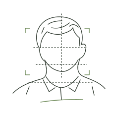

Interactive developer portfolio
Marin Grabovac.
Computer science student
I build software across web, mobile and desktop, and test how it holds up in practice.
FIG. 01 / THE WORKBENCHDESK STUDY

MG / 01+
